| 
|

PIE Home
Events
Ideas
Crickets
Places
Links
Philosophy
|
  |
|
 |
 |
20
things to do with a Cricket (or other Programmable Brick) |
|
|
| |
-Create
a musical drinking fountain |
|
-Make
a machine that draws |
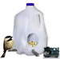 |
-Photograph
birds that visit a bird feeder |
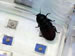 |
-Find
out what your insect pet does while you're sleeping |
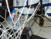 |
-Count
baskets in a basketball net |
|
-Design
your own talking night light |
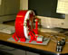 |
-Create
new kinds of drums, rattles, and other musical instruments |
 |
-Enhance
a duck decoy so it can swim and quack with other ducks |
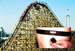 |
-Record
your heart beat while you're riding a roller coaster, then compare with
your friends' heart beats |
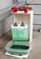 |
-Design
a machine that paints while you sleep |
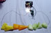 |
-Make
a xylophone out of fruit |
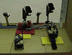 |
-Tell
a story with a puppet theater that lights up when you applaud |
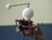 |
-Construct
a model of the moon orbiting the earth |
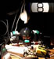 |
-Answer
questions with an automated eightball |
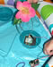 |
-Build
and program a colorful water fountain |
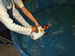 |
-Send
a cricket boat out to sea |
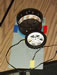 |
-Make
an animation machine that will play moving pictures |
 |
-Invent
a remote-control painting machine |
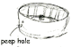 |
-Build
a diorama that reveals a scene when you peer inside |
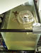 |
-Monitor
the temperature of a pond (or fishtank) |
| |
|
| |
|
|
|